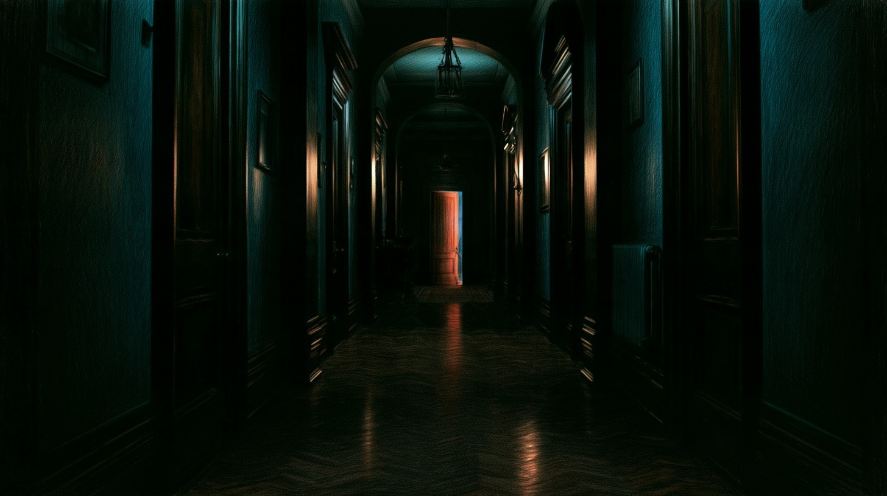
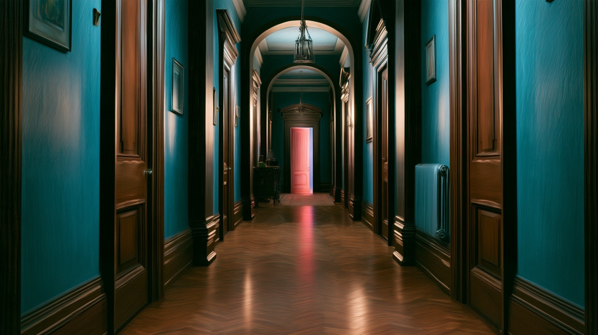

Upstairs hallway
The last door at the end of the hall.


It is too dark to see. Move your mouse to light the way.
The last door at the end of the hall.


It is too dark to see. Move your mouse to light the way.